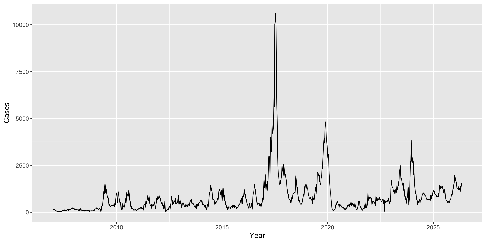
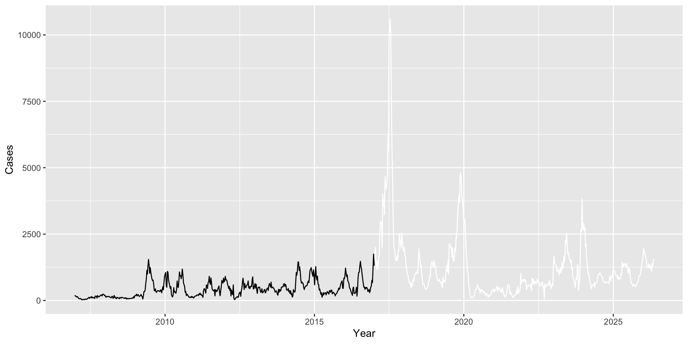
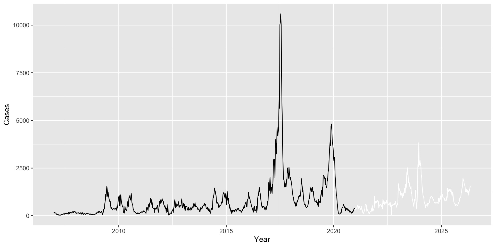
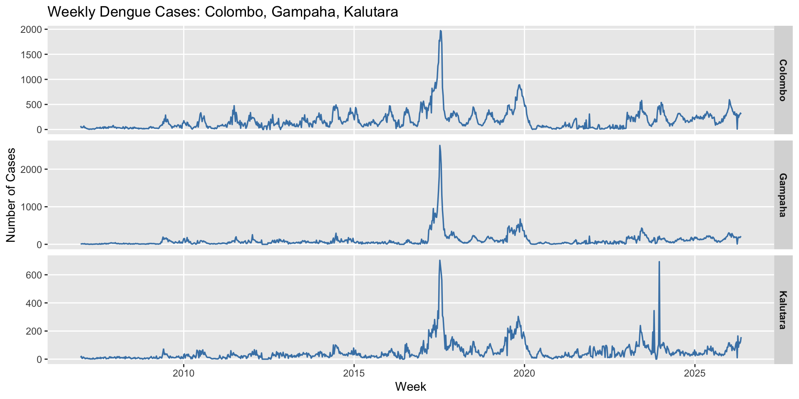
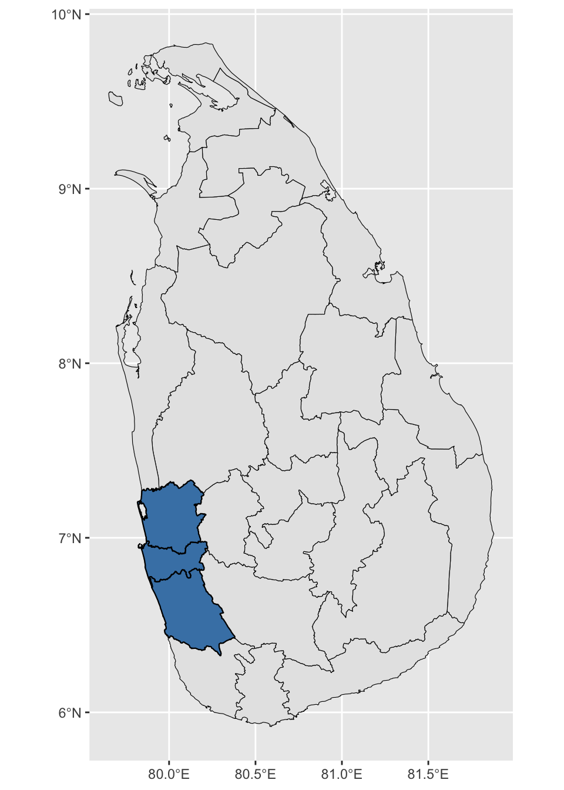
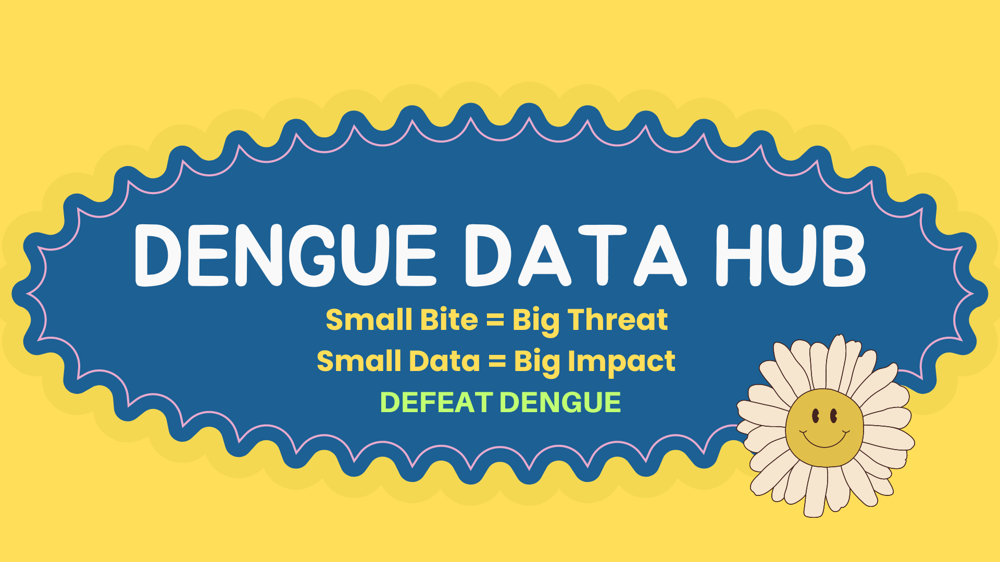

Forecasting Dengue in Sri Lanka: A Journey Through Challenges, Actions, and Lessons Learned
Women in Forecasting (WIF) Conference - 2026, Montreal, Canada
Thiyanga S. Talagala
Department of Statistics, University of Sri Jayewardenepura, Sri Lanka
Sri Lanka climate
🌴Climate type:
- Tropical climate: Warm and humid throughout the year
☀️Average temperature:
Typically 26°C – 30°C in lowlands
Cooler in central highlands (e.g., Nuwara Eliya ~16°C–20°C)
🌧💧️ Rainfall:
Two main monsoon seasons:
Southwest monsoon (May–September)
Northeast monsoon (December–February)
What makes dengue forecasting a challenging problem?
Weekly Dengue Cases in Sri Lanka: 2007 - 2016

Weekly Dengue Cases in Sri Lanka: 2007 - 2018

Weekly Dengue Cases in Sri Lanka: 2007 - 2019

Weekly Dengue Cases in Sri Lanka: 2007 - 2022

Dengue Cases in Sri Lanka: 2007 - 2026 March

Historical dengue time series patterns may not persist due to changes in transmission dynamics.
Weekly Dengue Cases by District (2020 onwards)
Dengue is endemic in all districts across the country throughout the year.


Even though Colombo, Gampaha, and Kalutara are geographically close in the Western Province, their dengue time-series patterns can look quite different.
Spatial proximity does not imply temporal similarity in dengue dynamics.
There is no centralized repository providing readily accessible, analysis-ready dengue data.
Actions
Action 1: Dengue Data Hub
denguedatahub R package
# A tibble: 26,311 × 6
year week start.date end.date district cases
<dbl> <dbl> <chr> <chr> <chr> <dbl>
1 2006 52 12/23/2006 12/29/2006 Colombo 71
2 2006 52 12/23/2006 12/29/2006 Gampaha 12
3 2006 52 12/23/2006 12/29/2006 Kalutara 12
4 2006 52 12/23/2006 12/29/2006 Kandy 20
5 2006 52 12/23/2006 12/29/2006 Matale 4
6 2006 52 12/23/2006 12/29/2006 NuwaraEliya 1
7 2006 52 12/23/2006 12/29/2006 Galle 1
8 2006 52 12/23/2006 12/29/2006 Hambanthota 1
9 2006 52 12/23/2006 12/29/2006 Matara 11
10 2006 52 12/23/2006 12/29/2006 Jaffna 0
# ℹ 26,301 more rowshttps://thiyangt.github.io/denguedatahubweb/

We have data for 225 countries around the world!
Action 2: Dengue Atlas
Different models, different training set give different forecast even on a single series
Action 3: Impact of training dataset and model choice on dengue forecasting
- How do different training dataset choices and different model choices influence forecast error?
Action 3: Impact of training dataset and model choice on dengue forecasting
How do different training dataset choices and different model choices influence forecast error?
Do training dataset and model choices exhibit spatial patterns across districts?
Action 3: Impact of training dataset and model choice on dengue forecasting
How do different training dataset choices and different model choices influence forecast error?
Do training dataset and model choices exhibit spatial patterns across districts?
Are the strengths of seasonality and the strengths of trend, computed over different time periods, helpful in identifying the best-performing combination of training dataset and model?
Action 3: Impact of training dataset and model choice on dengue forecasting
How do different training dataset choices and different model choices influence forecast error?
Do training dataset and model choices exhibit spatial patterns across districts?
Are the strengths of seasonality and the strengths of trend, computed over different time periods, helpful in identifying the best-performing combination of training dataset and model?
Do the strength of seasonality and the strength of trend, computed over different time periods, help explain the choice of the best model and training dataset?
Action 3: Impact of training dataset and model choice on dengue forecasting
How do different training dataset choices and different model choices influence forecast error?
Do training dataset and model choices exhibit spatial patterns across districts?
Are the strengths of seasonality and the strengths of trend, computed over different time periods, helpful in identifying the best-performing combination of training dataset and model?
Do the strength of seasonality and the strength of trend, computed over different time periods, help explain the choice of the best model and training dataset?
Do structural changes identified through segmented regression help explain the reasons for the best model and training dataset choice?
Training set
Pre COVID-19 period: 2007 - 2020
During COVID-19 period: from 2020 to 2022
Post COVID-19 period: 2023 - 2024
Test set
The first 8 weeks of 2025
Training dataset choices
All data
Excluding the interrupted period and pre-COVID-19 period from model training and use only post COVID-19 period data
Forecasting the interrupted period first and then using it for modeling:
Down-weighting interrupted period
Model choices
Automated ARIMA algorithms
Trigonometric seasonality, Box-Cox transformation, ARMA errors, Trend and Seasonal components (TBATS) model
STL - ETS approach: Using STL decomposition, the seasonal component is extracted from the original series. Then, the ETS model is fitted to the seasonally adjusted series. When fitting the ETS model, the seasonal component is set to “None”. In this way, STL captures seasonality, ETS models the remaining structure, and the final forecast is their combination.
Dynamic Harmonic Regression (DHR): Complex seasonality is modeled using Fourier terms combined with ARIMA errors. When the seasonal cycle is long (e.g., 52 weeks), DHR models usually perform better than ARIMA or ETS models.